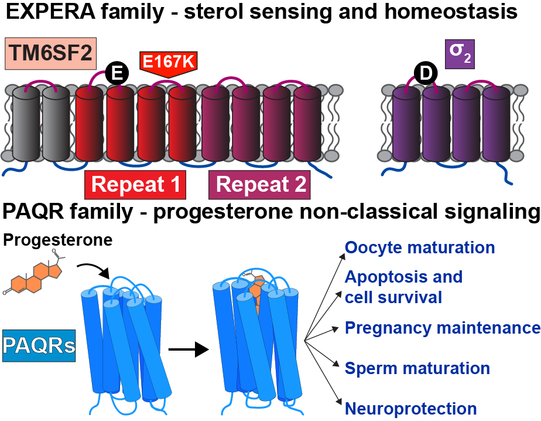
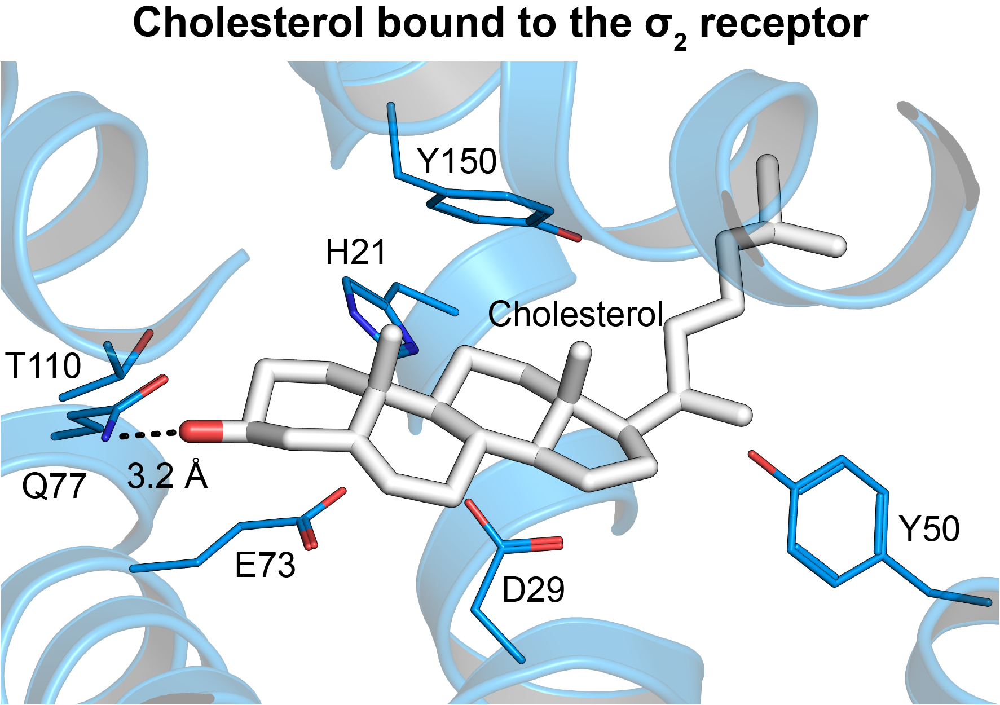
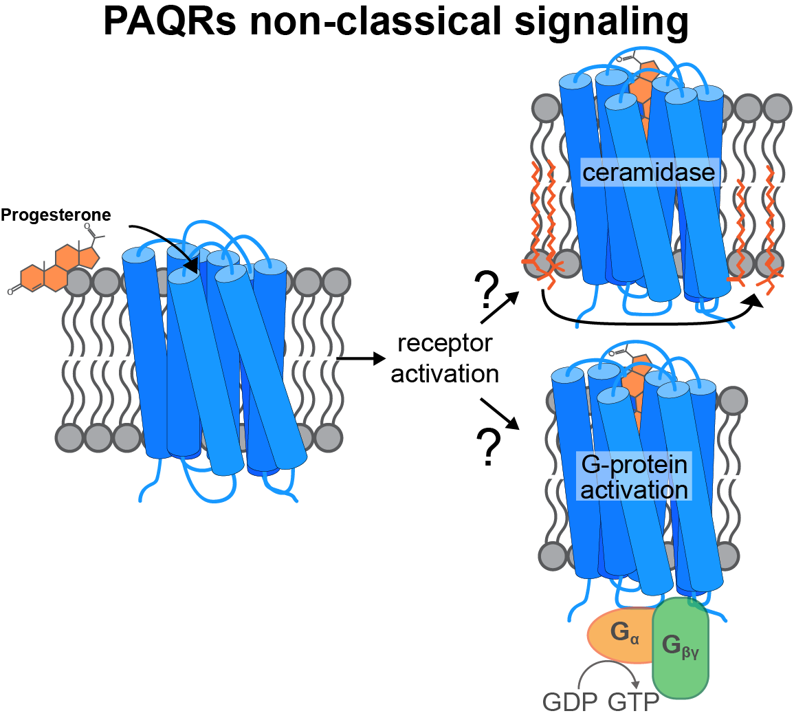

Overview
Cholesterol is an essential component in mammalian cell membranes, helping to fine-tune their biophysical properties. Moreover, it is the precursor to oxysterols, vitamin D, bile acids, and hormones such as testosterone, progesterone, and estrogen. Sterols are sensed by numerous classes of receptors and synthesized by a multitude of tightly regulated enzymes. Severe disease results when dysregulation causes sterol accumulation or depletion.
Our lab uses a combination of structural biology, pharmacology, biochemistry, cell biology, and computational methods to decipher the molecular mechanisms underlying sterol synthesis, recognition, and signaling.
We are specifically interested in how two structurally distinct novel protein families, EXPERA (EXPanded EBP superfamily) and PAQR (progestin and adipoQ receptors), sense and respond to sterols.


The EXPERA Family
EXPERA is a five-member family of membrane proteins. The hallmark of the EXPERA family is a four-helix bundle transmembrane (TM) domain. The physiological role of most EXPERA proteins is incompletely understood, but is clearly rooted in sterol recognition as all family members are predicted to adopt a similar fold with binding pocket residues that are conserved across the family.
The σ₂ receptor belongs to the EXPERA family and is involved in cholesterol homeostasis, regulation of Niemann-Pick C1 (NPC1), LDL internalization, cancer, schizophrenia, and other conditions.
The other well-studied member is TM6SF2. A loss-of-function mutation (E176K) causes carriers to be susceptible to nonalcoholic fatty liver disease (NAFLD), the most common form of liver disease.
The PAQR Family
Progesterone is a steroid hormone essential for ovulation and initiation of pregnancy. The classical physiological responses to progesterone are mediated by nuclear receptors that act as transcription factors.
Some physiological responses utilize a parallel signaling pathway initiated by progesterone binding to membrane receptors. This rapid nongenomic pathway is mediated by a subclass of the Progestin AdipoQ Receptor (PAQR) family of integral membrane proteins.
These PAQRs localize to the plasma membrane, the ER, and the lysosome and are expressed in both reproductive and nonreproductive tissues, indicating a functional role in a wide variety of tissues. How these proteins selectively recognize progesterone and signal remains unclear.

3D Molecular Viewer
Interactive structure viewer — drag to rotate, scroll to zoom.